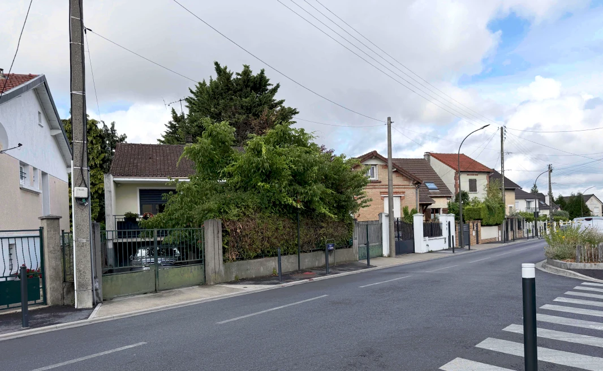
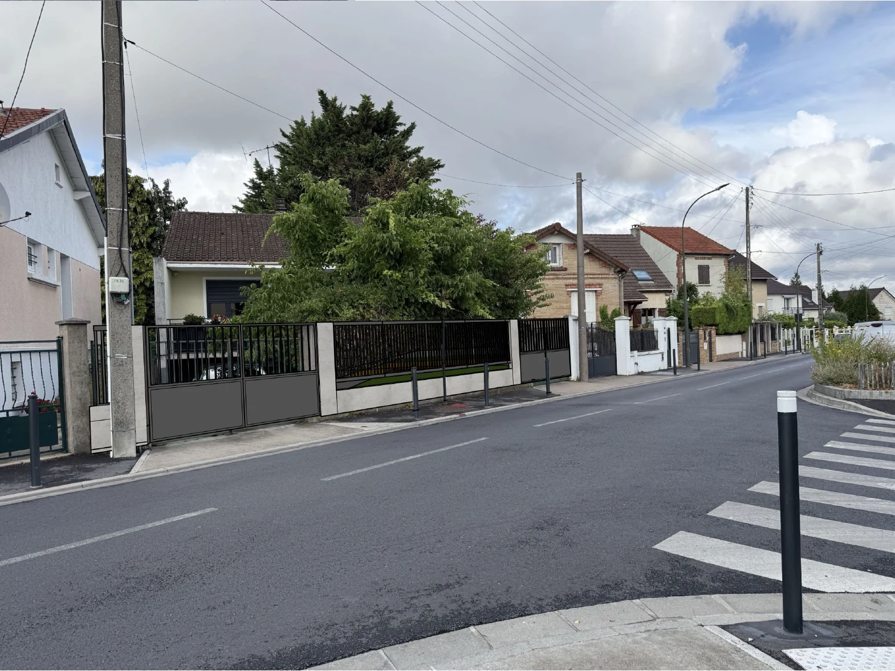
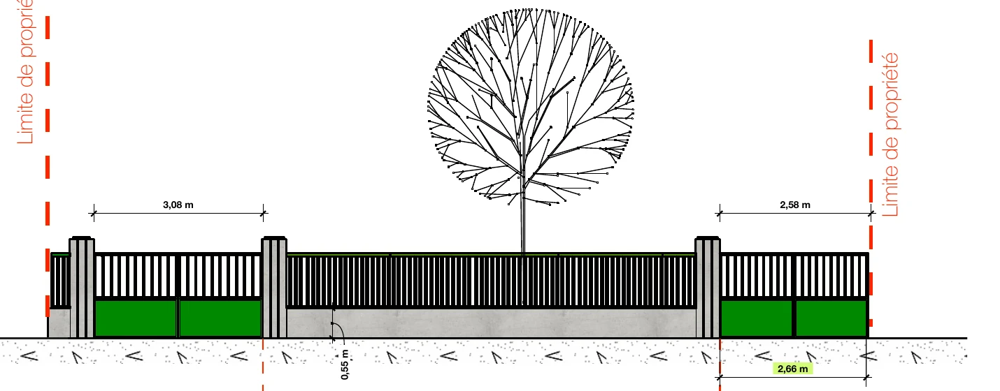
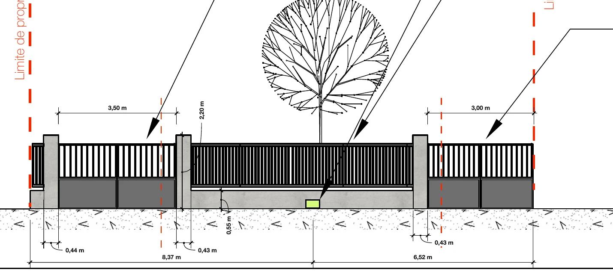
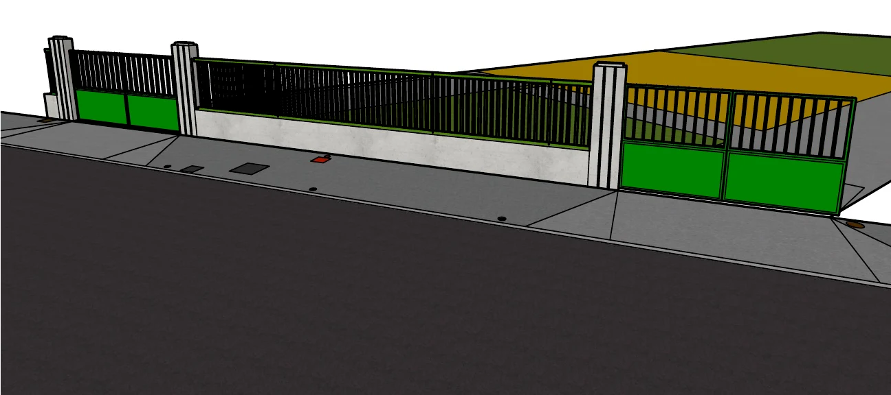
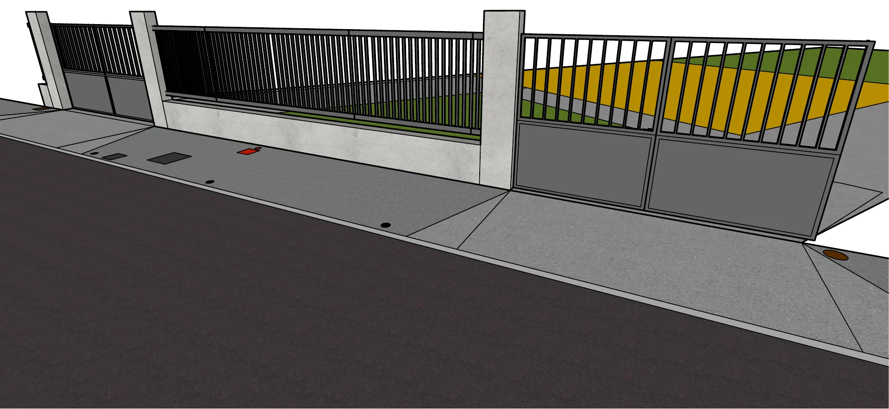

Réalisation · Argenteuil (95)
Agrandir un portail ?
Ça se déclare.
Deux entrées élargies sur une rue passante, pour sortir sa voiture en sécurité.
Avant / après dans la rue
Même clôture,
entrées plus larges.

AVANT

APRÈS · INSERTION PROJET
La clôture, cotée
Chaque centimètre
compte.
EXISTANT

PROJET

3,08 → 3,50 m
portail coulissant
2,58 → 3,00 m
portail 2 vantaux + portillon
La vue 3D
Avant de commander,
on visualise.
EXISTANT

PROJET

Bon à savoir
Clôture et portail :
3
règles.
1
Ça se déclare
Dans beaucoup de communes : déclaration préalable.
2
Le PLU fixe le cadre
Hauteur, matériaux, couleur, partie ajourée.
3
La petite faune
Certains PLU imposent un passage au pied de la clôture.
Envoyez une photo en DM →